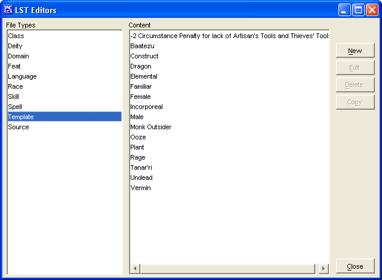

The Template Editor is to create you own Templates, edit ones you have already made, and in the future will allow you to edit existing Templates (from other data/list files).
The New button will allow the creation of a new Template.
The Edit button will allow you to edit the selected Template (Templates created within this Template Editor only at this stage).
The Delete button will remove the selected Template (Templates created within this Template Editor only at this stage).
The Copy button makes a copy of a selected Template. In this way you can slightly modify an existing Template and give it a new name.
The Close button will allow you to exit back to PCGen.
Templates added will be saved into the customTemplates.lst file.